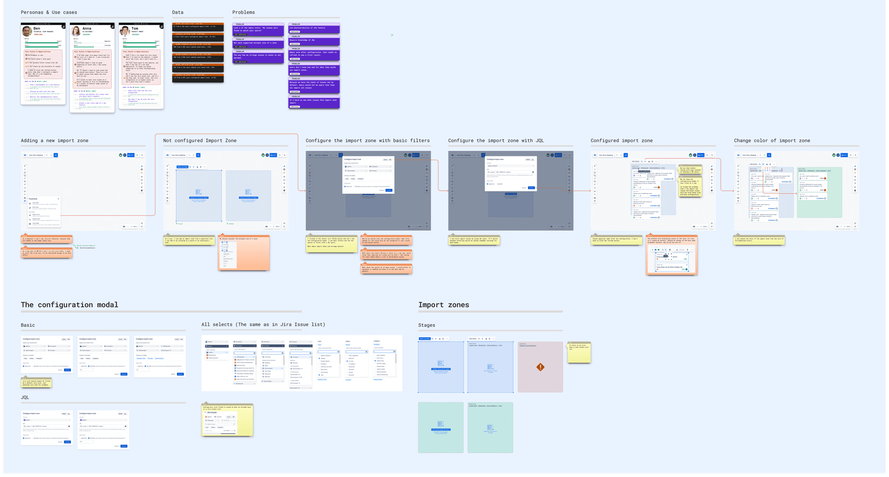
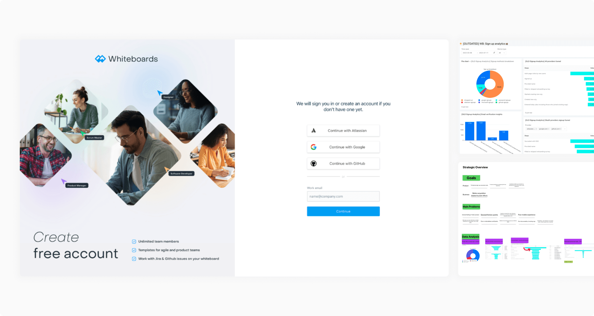
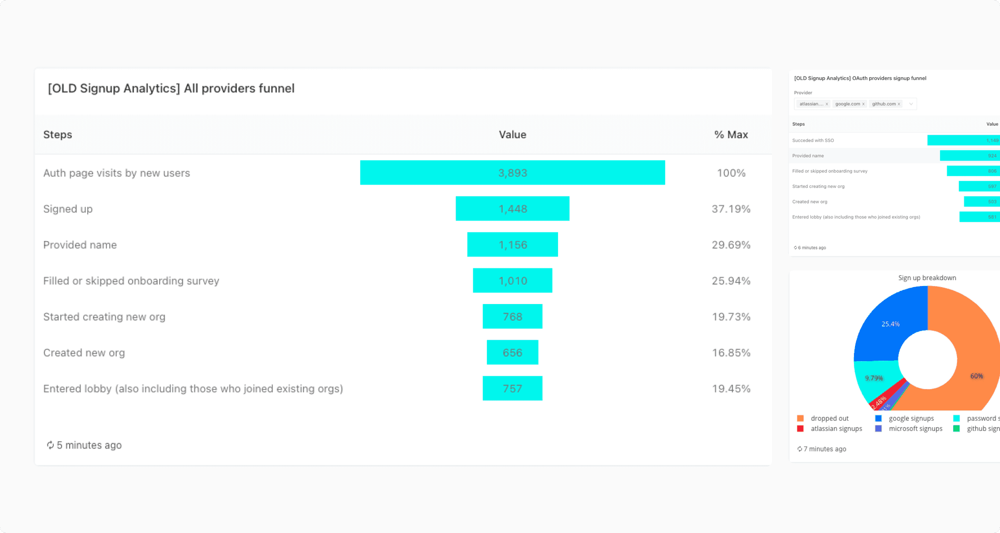
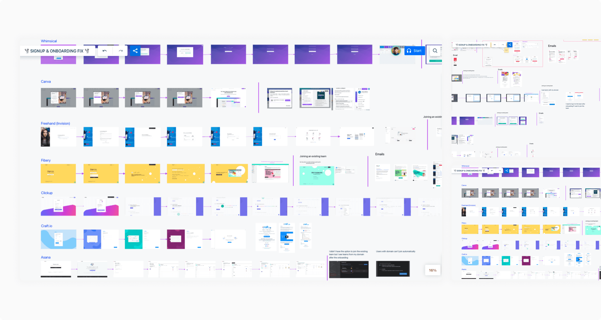
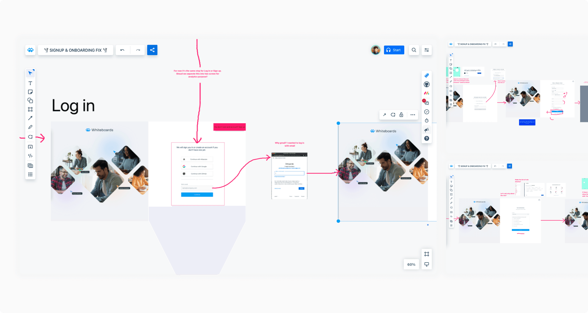
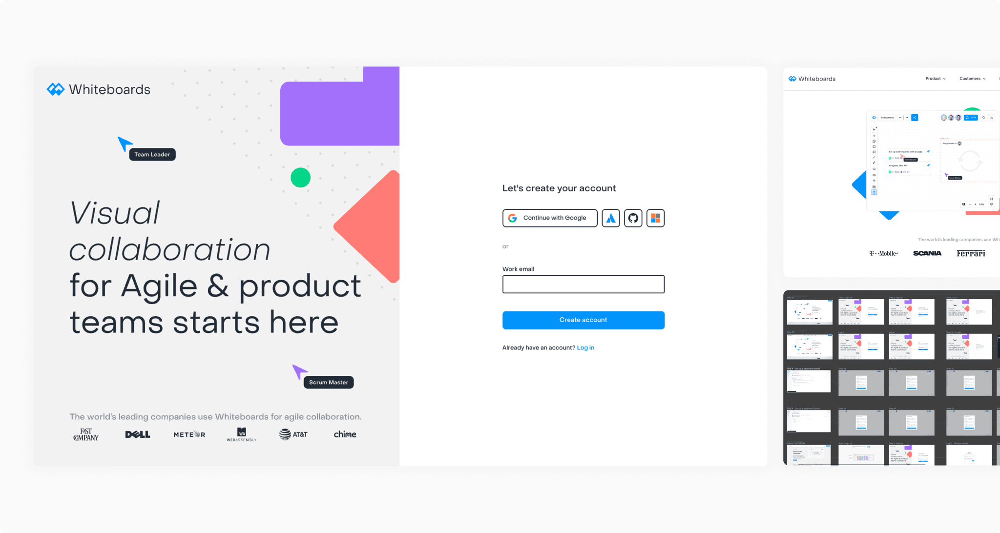
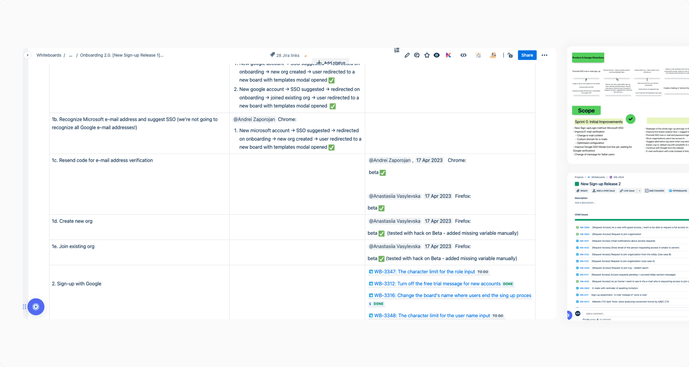
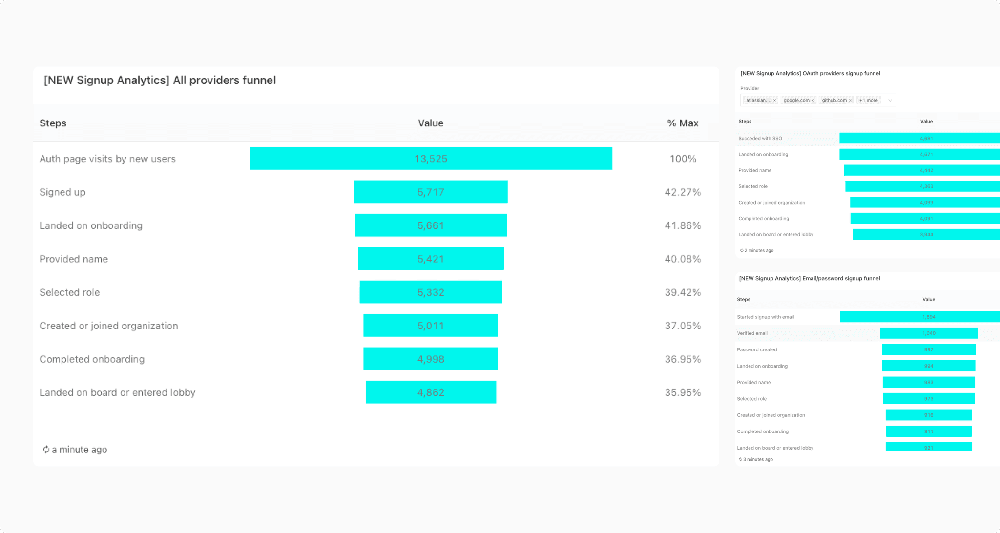

Whiteboards was a collaboration plugin for Jira and Confluence, designed for agile planning, retrospectives, and daily stand-ups. Before launching a marketing campaign, we redesigned its sign-up journey to reduce drop-off and make the first experience clearer.

Process
Why we redesigned sign-up
Sign-up conversion was only 20%, so increasing marketing traffic without improving the journey would not have been effective. The existing flow was not mobile-friendly, included unnecessary steps and unclear copy, and used an outdated UI.

Funnel analysis
Nearly 60% of users dropped off at the first step. Google SSO was the most popular authentication option and converted 20% better than other methods, while only 40% of users completed email verification.

Competitor analysis
I reviewed sign-up best practices to understand what makes the process feel simpler. The strongest patterns were one decision per step, clearer Google SSO prominence, social proof, and UI cues that make the journey appear shorter.

Tailoring the flow
We reduced the information requested during sign-up, made Google SSO more prominent, and switched email verification to a code. We kept only the user role, removed the teammate-invite step, and ended onboarding directly on a board with the template library visible.

UI design
I designed the new journey and mapped all user paths with the team. We used these paths to discuss the experience in detail and break the initiative into clear, deliverable parts.

Scoping, handoff, and testing
Once the design was ready, we created an epic, refined and estimated the work, and handed individual elements to engineering. During implementation, my main responsibility was testing the experience across the full flow.

Outcome
After release, we monitored the new funnel with a dedicated analytics dashboard. Conversion increased from 19% to 36.5%, Google SSO adoption grew, and every step of the process showed stronger conversion.
